◤基本知識
部位名稱
- 球體(半面)
- 球體表面
- 球體內壁
- 球體外唇
- 回收內壁
- 拇指溝
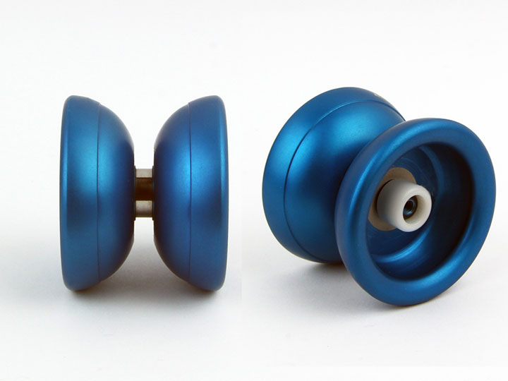
- 外蓋(火罩)
- 墊片
- 墊片座
- 軸承座
- 回收內壁
- 回收座(膠貼座)
- 軸心，螺牙
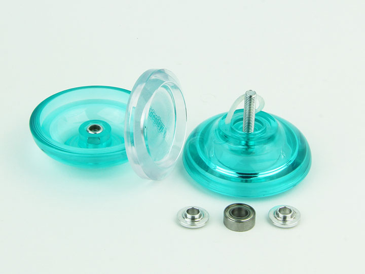
- 側邊軸承
- 側邊軸承套
- 側邊軸承座
- 側邊固定O環
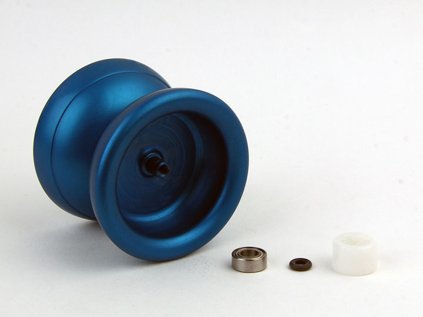
材質分類
原木材質
早期最容易加工與組合的材質，大多是固定軸心且不可拆開的。現今大多為廣告及宣傳用途。
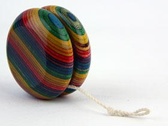
原木溜溜球
塑膠材質
性能較原木材質佳，空轉與回收力道適中，大多為入門及初學玩家使用的材質。塑膠材質可分為射出成形製造及數位控制車床加工製造。射出成形製造法因為使用模具大量製造，因此價格較為低廉，顏色多樣，且材質具有彈性，不易損壞，練習時也比較安全。數位控制車床加工製造可以有較佳的精度，有效提升球體性能，但是顏色選擇較少以及價格較高。
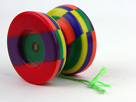
塑膠溜溜球
內加重環、外加重環等複合材質
此種加重環式溜溜球有全金屬材質更好的性能，但是價格比較低廉。適合準備進入中高階等級的玩家使用。因為此金屬材質為外部嵌入、組合或是黏合式，球體經過撞擊後，該金屬環有機會變形、位移甚至脫離球體的風險存在，將會造成球體震動、抖動等情況。
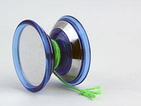
複合材質溜溜球
航太金屬
全金屬溜溜球屬於高階玩家使用，使用電腦數位控制一體成形的溜溜球球體，具有相當的空轉穩定性。外表通常使用陽極處理方式上色，現在除了單色，更有廠商推出潑墨、渲染方式的色系。此種溜溜球也不適合撞擊，有機會使球體變形或是軸心損壞，造成振動、抖動甚至可能完全無法使用。
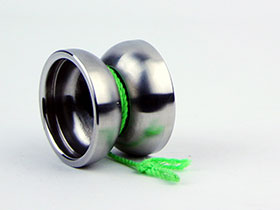
航太金屬溜溜球
球形分類
經典快打形
為早期溜溜球開創年代的外型，大多為固定軸心。
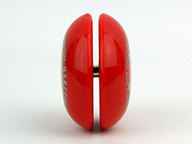
經典快打形溜溜球
一般快打形(全能型)
近代入門溜溜球及雙手迴旋花式使用的球種，較高的回收內壁，具有良好的回收性能，較為扁平的外型非常適合手較小的入門玩家使用。
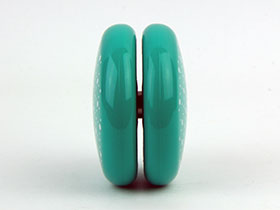
一般快打形(全能型)溜溜球
圓弧形
蝶翼型的初始設計，回收內壁較全能型低，球體為圓弧形，回收時手掌受力較平均。在使用線上滑動技巧與滾手技巧上會比較穩定，但是在使用斜向技巧時，球體跟溜溜球繩的摩擦稍大，因此出現了直線型。
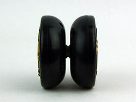
圓弧形溜溜球
直線形
為改善斜向技巧的球種，球體圓弧較大近似直線，可以降低斜向技巧造成的球體摩擦，但是回收時的力量集中在球體外唇上，一開始練習時必須注意。
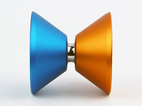
直線形溜溜球
平面外環形
為了改善收球的力量集中問題所開發的外型，平面外環可以有效的增加球體與手掌的接觸面積，進而分散收球時的力量。為了改善收球的力量集中問題所開發的外型，平面外環可以有效的增加球體與手掌的接觸面積，進而分散收球時的力量。
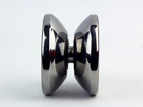
平面外環形溜溜球
階段式直線形
球體分為兩階段角度設計，在斜向技巧的控制方面有較佳的性能外，也能兼顧回收時的手感。
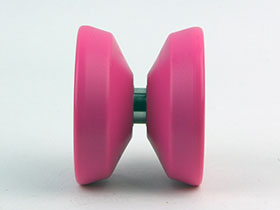
階段式直線形溜溜球
階段式圓弧形
較有名的就是YoyoRecreation系列的球種，為能兼顧斜向技巧控制能力又有較緩和的回收手感。
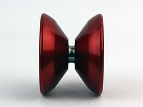
階段式圓弧形溜溜球
H形
為瑞士Hspin公司2007年率先設計的特殊造型溜溜球，是將斜向技巧會用到的球體表面全部內縮，外部為平面外環，形成相當極端的球體。此後更有一系列改變內外段差較低的H型溜溜球上市。
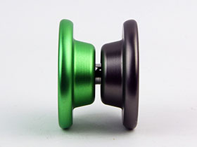
H形溜溜球
反弧形
約在2008年開始的外型，為H型與階段式圓弧形的合成型，同樣能徹底改善斜向技巧的球體摩擦問題，球體後半部設計成圓弧形、直線型或是平面外環型調整收發球手感。手指在反弧形內會有較佳的手感，在做滾指技巧時會有較好的穩定度。
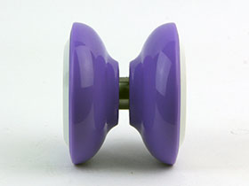
反弧形溜溜球
ZS形
源自中國白水設計的L4，在球體上內切一個不影響上線區域的凹槽。
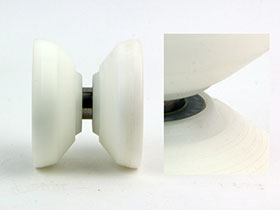
ZS形溜溜球
軸承系統分類
固定軸心
早期溜溜球的設計，也是最簡單的溜溜球構造，不過此種軸心因為直接與溜溜球繩摩擦，不適合空轉使用，空轉時間較短，但是還是可以使用一些簡易的編織招式與快打招式。固定軸心有木頭軸心與金屬軸心之分。木頭軸心摩擦力較強，發球與回收都較為強勁，但是空轉就較金屬軸心弱，金屬軸心空轉能力較木頭軸心佳。
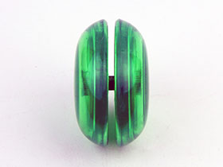
固定軸心溜溜球
尼龍軸承系統
為固定軸心的改良設計，在金屬固定軸心外套入一個尼龍套筒，以減低繩子與軸心的摩擦力，空轉力大大提升，此種回收系統大多在全能型溜溜球上，適合入門玩家使用。部分玩家利用尼龍套筒與金屬軸心兩者的間隙中加入不同油品，調整使用者想要的回收力道與手感。有另一種球種，在球體外側加入一組由鋼珠控制的離合器回收系統，更適合入門玩家使用。這種球體也可以經由墊片改造成金屬滾珠軸承，是適用性非常廣泛的軸承系統。
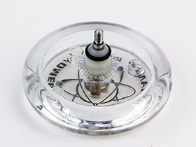
尼龍軸承系統溜溜球
金屬滾珠軸承系統
為現代溜溜球的心臟，是所有溜溜球轉動的心臟，安裝不正確的軸承將無法有效發揮球體性能，更無法展現玩家的技巧，因此選擇正確的軸承是相當重要的一件事，以下將介紹近代常用軸承的分類與尺寸。
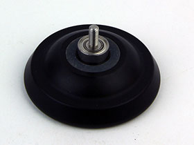
金屬滾珠軸承系統溜溜球
金屬滾珠軸承分類
-
一般平面軸承
大部分溜溜球內附的軸承，為最基本、最經濟實惠的軸承類型
-
弧形軸承
進階玩家會使用的軸承，能夠有效降低軸承上的溜溜球繩與回收系統的摩擦，也能有效地使溜溜球繩保持在軸承中心。
-
凹型軸承
使溜溜球繩圈可以陷在軸承中，能使上方有更多空間容納其他繩子。
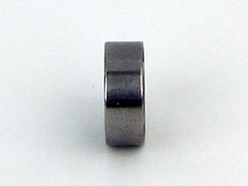
一般平面軸承
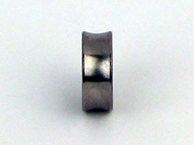
弧形軸承
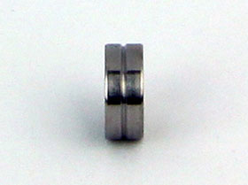
凹型軸承
軸承壽命
品質越好的軸承通常壽命越久，在一般練習情況下，當軸承突然出現異音時請立刻停下來進行清洗的動作。越常保養的軸承壽命越容易延長，空轉時間也會隨之提升。此外練習時不小心撞擊地面或是任何的衝擊都有可能損傷軸承，更有可能造成無法運轉，如果清洗後還是無法正常運作，請重新購買新的軸承並進行清洗及安裝。
回收方式分類
直接回收型
當你想要回收時，只要將手拉回來，球就會直接的產生回收力將球回收。過去的溜溜球幾乎是這種設定，比較常用在初學者或是快打玩家
- 優點：可以不用綁線回收，可以玩編繩類型及快打類型的招式
- 缺點：空轉時間較短，有可能在非預期的時候回收
綁線回收型
現在販售的溜溜球大多是此種設定，特別是高階金屬球。此種球只有在綁線回收時才會產生回收力，適合任何複雜招式的練習。
- 優點：空轉時間長，任何時候都不易回收，除非你使用綁線收球法
- 缺點：如果沒有學習綁線回收法，將無法收球
回收系統分類
回收系統為溜溜球啟動時人體力量加上重力與轉動力互相轉換的重要零件，不同回收系統有不同的特性及其適合的花式類型，以下將介紹各種常見的回收系統。
離合器回收系統
多為尼龍軸承類型搭配星紋回收系統的溜溜球，是屬於入門玩家級使用的溜溜球，不管高速或是低速下都可以回收，讓玩家習慣回收時的轉速、手感的訓練用溜溜球。
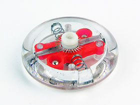
離合器回收系統溜溜球
星紋回收系統
軸承類全能型溜溜球常見的回收系統，優點是咬線敏感、迅速，但是低轉速下回收效果不彰，而且如果常處於高速回收會產生高溫狀態，星紋將容易磨損，但是其獨特的手感相當受2A玩家喜愛，目前常見於Yomega的全能型快打溜溜球。
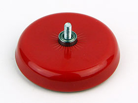
星紋回收系統溜溜球
彈性星紋回收系統
為新一代的星紋回收方式，結合了膠貼的彈性、與星紋的高抓線性能、耐用性，也是新手們相當適合練習用的回收系統。後期更可拆開將星紋去除改成多孔回收、膠貼回收來使用。
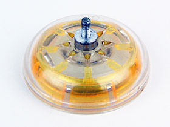
彈性星紋回收系統溜溜球
多孔回收系統
回收能力較無回收系統的回收力強，線上滑順、不易咬線，有分為三孔回收與四孔回收，過去曾經用在1A溜溜球上，目前則是部份4A玩家們喜愛的回收系統之一。
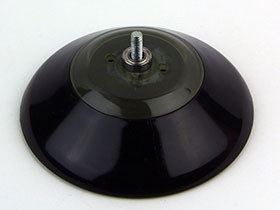
多孔回收系統溜溜球
O環回收系統
回收能力強、回收系統突出於回收內壁，但是損耗率極低，相當容易保養維護，非常推薦初學玩家使用。也有部分玩家將O-ring凸出的部分磨去，可以稍稍減低回收力量及敏感度。
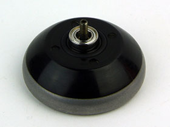
O環回收系統溜溜球
膠貼回收系統
為DUNCAN近年入門球的回收設計，是以一片膠材作為回收的摩擦力來源，是一般玩家都可以自製的回收系統，不過回收強度會隨該膠材的消耗而喪失，回收手感會一直改變，較多1A玩家喜愛此種回收系統。
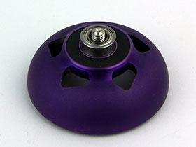
膠貼回收系統溜溜球
流體矽膠回收系統
當時矽膠膠貼還未普及前，大家是利用O-ring的回收槽來填充流體矽膠，此種回收系統有收線緊實、回收力強硬、線上滑順等特色，但是損耗率較高，玩家必須等待矽膠完全乾糙才能使用。
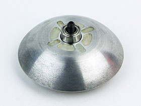
流體矽膠回收系統溜溜球
矽膠膠貼回收系統
改善了流體矽膠的缺點，較流體矽膠方便安裝、不必等待矽膠乾燥，另外也開始有相當多尺寸、材質可以選擇，相當受1A、3A、4A、5A玩家歡迎，為現代溜溜球主要的回收系統。
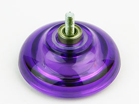
矽膠膠貼回收系統溜溜球